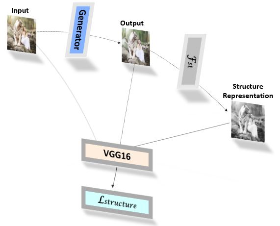

Overview
Introduction
This project leverages on the excellent property of Generative Adverserial Networks (GANs), i.e., their ability to produce good and quality images with similar statistics as real images in many computer vision applications. Likewise given an image, a GAN can generate nice cartoon paintings from the image (Image Cartoonization). The GAN framework continues to be an active area of research in computer vision and has led to many variants of GANs. These techniques basically further explore GANs through different model architectures, loss functions, hyperparameters, etc.
In order to produce cartoon samples from images, this project employs the work of Wang et al, Learning to Cartoonize Using White-box Cartoon Representations. Their work explores how cartoon artists work to come up with their final products and learns a GAN framework from the techniques. Wang et al were able to discover different levels of representations of cartoon art in which the authors summarize into three, namely: surface, structure and texture representations. A GAN framework is then trained on these representations to learn to cartoonize images.
GANs Discussed
GANs, Goodfellow et al, are structured probabilistic generative models that basically learn to produce samples, \(x_0\) that are intended to come from the same distribution as the observed variables, \(x\). GANs learn to model the unknown data generating process of \(x\), just like most structured probabilistic models, with a latent variable, \(z\). GANs consist of a generator function \((G)\) that is tasked with producing the expected samples, \(x_0\) and a discriminator function \((D)\) that tries to distinguish between samples produced by the generator (fake samples) and those of the training samples (real samples). Both functions need to be differentiable with respect to their inputs and model parameters; hence mostly represented by neural networks. As the generator tries to produce \(x_0\), the discriminator tends to make the generator outputs distinguishable from the real samples. Consequently, the discriminator guides the generator to eventually learn to produce samples that correspond to \(x_0\).
Formally, \(G\) takes \(z\) (the model's prior over latent variables, eg. Gaussian) as input, \(G(z)\), whereas the discriminator initially takes \(x\), \(D(x)\), as input and then takes \(G(z)\) as input, \(D(G(z))\). The discriminator ensures that \(D(x)\) is close to one whereas \(D(G(z))\) is close to zero.
Considering a generalised cross-entropy loss, the discriminator loss, \(J^{(D)}\), is given by:
$$J^{(D)}(\theta^{(D)},\theta^{(G)}) = - \mathbb{E}_{x \sim p_{data}}logD(x) - $$
\[\qquad \qquad \mathbb{E}_{x \sim p_{model}}log(1-D(G(z))\]
where \(\theta^{(D)}\) and \(\theta^{(G)}\) denote the discriminator and generative model parameters respectively.
At convergence, the discriminator is discarded and the final generator model is used to produce images corresponding to \(x_0\).
White-box Representations
Surface Representation
Imagine visualizing cartoon artists make rough sketches by way of drafts to obtain smooth surfaces depicting cartoon images. Wang and Yu adopt similar concept to produce smooth surfaces without capturing textures and details. In order to achieve this, the authors adopt an edge preserving filtering method; a differentiable guided filter, \(\mathcal{F}_{dgf}\). The authors argue that \(\mathcal{F}_{dgf}\) does not only produce smooth surfaces but also keep the global semantic structure of the image.
Structure representation
To capture the structure, the authors first of all segment a given image into separate regions using the felzenszwalb algorithm . The segmented regions are merged with selective search which is further applied to merged regions to produce a segmentation map which is sparse. In order to preserve the contrast and reduce hazing effect of the image the authors apply an adaptive coloring algorithm to results. The adaptive coloring algorithm is given by: $$S_{i,j} = (\theta_1 * \bar{S} + \theta_2 * \tilde{S})^{\mu}$$ $$\begin{equation} (\theta_1, \theta_2) = \begin{cases} (0,1) & \sigma(S) < \gamma_1,\\ (0.5,0.5) & \gamma_1 < \sigma(S) < \gamma_2,\\ (1,0) & \gamma_2 < \sigma(S). \end{cases} \end{equation}$$
Textural Representation
With the texture representation, the algorithm used is a random shift algorithm, \(\mathcal{F}_{rcs}\) which is given by: $$\mathcal{F}_{rcs}(I_{rgb}) = (1-\alpha)(\beta_1*I_r+\beta_2*I_g+\beta_3*I_b)+\alpha_1*Y$$ where \(I_{rgb}\) denotes 3-channel \(RGB\) color images, \(I_r\), \(I_g\), \(I_b\) denote the three color channels and \(Y\), standard grayscale image obtained by converting image color from \(RGB\). \(B_1\), \(B_2\) and \(B_3\) are sampled from a uniform distribution \(U(-1, 1)\) and \(\alpha = 0.8\).
Learning Whit-Box Representaions with GAN
- To learn surface representations (\(Fig.1\)), the surface representation algorithm is applicad to both the model and reference cartoon images. A discriminator \(D_s\) is used to guide the generator to learn the surface representations of the reference cartoon images. The loss for the surface representations is given by:
$$\mathcal{L}_{surface}(G, D_s) = logD_s(\mathcal{F}_{dgf}(I_c,I_c)) +$$
\[\qquad \qquad log(1-D_s(\mathcal{F}_{dgf}(G(I_p),G(I_P))))\]
where \(I_c\) denotes the reference cartoon images and \(I_p\) denotes the input photo
\(Fig.1\). Data Flow in the Surface Representation Network.
- To formulate the structure representations (\(Fig.2\)), the structure method is applied to the model output and the output is passed through a pre-trained \(VGG16\) network. The pretrained network ensures a spatial structure is preserved between the generator output and the extracted structure representations. The structure loss is therefore given by:
$$\mathcal{L}_{structure} = ||VGG_n(G(I_P)) - VGG_n(\mathcal{F}_{st}(G(I_p)))||$$

\(Fig.2\). Data Flow in the Structure Representation Network.
- The texture representation (\(Fig.3\)), likewise the surface loss, employs a discriminator, \(D_t\), to guide the generator to learn texture representations of the reference cartoon image. In this regard, the texture representation algorithm is applied to both the model output and the reference cartoon image. The texture loss is given by:
$$\mathcal{L}_{texture}(G, D_t) = logD_t(\mathcal{F}_{rcs}(I_c)) +$$
\[\qquad \qquad log(1-D_t(\mathcal{F}_{rcs}(G(I_p)))\]
\(Fig.3\). Data Flow in the Texture Representation Network.
Total Loss
In addition to the representation losses, the authors introduce the total-variation \((\mathcal{L}_{tv})\) and content \((\mathcal{L}_{content})\) losses . The \(\mathcal{L}_{tv}\) preserves spatial smoothness and reduces high frequency noises of generated images. \(\mathcal{L}_{content}\) is computed on pre-trained outputs to ensure that the output image really represents the input image though the output image has been cartoonized. The total-variation loss is given by:
$$\mathcal{L}_{tv} = \frac{1}{H*W*C}||\nabla_x(G(I_p)) + \nabla_y(G(I_p))||$$
where \(H\), \(W\), \(C\) denote the dimensions of the image in space.
The content loss, \(\mathcal{L}_{content}\) is also given by a sparse \(L_1\) norm:
$$\mathcal{L}_{content} = ||VGG_n(G(I_P)) - VGG_n(I_p)||$$
The total network loss, Ltotal, is therefore given by:
$$\mathcal{L}_{total} = \lambda_1 * \mathcal{L}_{surface} + \lambda_2 * \mathcal{L}_{texture} +$$
\[\qquad \qquad \lambda_3 * \mathcal{L}_{structure} + \lambda_4 * \mathcal{L}_{content} + \lambda_5 * \mathcal{L}_{tv}\]
where \(\lambda_{1,2,..5}\) are hyperparameters that add different artistic styles.
Final Model Output
To obtain the final generator output, a style interpolation is adopted to adjust the sharpness of the output. Again \(\mathcal{F}_{dgf}\) is used for the style interpolation. The style interpolation given by: $$I_{interp} = \delta * \mathcal{F}_{dgf}(I_{in}, G(I_{in}) + (1 - \delta) * G(I_{in})$$ where \(I_{in}\) denotes the network input and \(I_{out}\), the network output.
\(Fig.4\) [paper]. Summary of Model Architecture.
Details of the network architecture and processes is covered the paper.
Results
In this project, test photos were taken from pixabay, for copyright reasons. The codes and pre-trained weights were obtained from the authors' repository. The pre-trained weights were applied to the following images to generate their respective cartoon representations.
Copyright Free images downloaded from pixabay
Copyright Free images downloaded from pixabay
↑ Back to Top